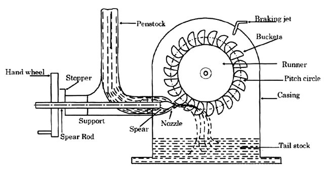

Q.22: Describe the working of Pelton turbine.
Answer:
It is tangential flow impulse turbine. The energy available at the inlet of the turbine is only kinetic energy. The pressure at the inlet and outlet of the turbine is atmospheric. This turbine is used for high heads and low specific speed. The main parts of Pelton turbines are:
1) Nozzle and flow regulating arrangement: The amount of water striking the buckets of the runner is controlled by providing a spear in the nozzle. When the spear is pushed forward into the nozzle the amount of water striking the runner is reduced. And when the spear is pushed back, the amount of water striking the runner increases.
2) Runner with buckets: It consists of a circular disc on the periphery of which a number of buckets are fixed. The shape of the bucket is of a double hemispherical cup. Each bucket is divided into two symmetrical parts by a dividing wall which is known as splitter. The splitter divides the jet into two equal parts and the jet comes out at the outer edge of the bucket. The buckets are shaped in a way that the jet gets deflected through 160o-170o.
3) Casing: The function of the casing is to prevent the splashing of water and to discharge water to tail race. It also acts as safeguard against accidents.
4) Breaking jet: When the nozzle is completely closed by moving the spear in the forward direction, the amount of water striking the runner reduces to zero. But the runner due to inertia goes on revolving for a long time. To stop the runner in a short time, a small nozzle is provided which directs the jet of water on the back of the vanes. This jet of water is called breaking jet.

Working: Water is transferred from a high head source through a penstock which is fitted with a nozzle. Through the nozzle, the water flows out as a high speed jet. A needle spear moving inside the nozzle controls the flow of water through the nozzle and at the same time provides a smooth flow with a negligible energy loss. The available potential energy of water is thus converted into kinetic energy before the jet strikes the buckets. The pressure of wheel is atmospheric and constant so that energy transfer occurs due to purely impulse action. Thus the wheel rotates in the direction of jet producing mechanical work. Speed of the turbine is kept constant by a governing mechanism that automatically regulates the quantity of water flowing through the runner in accordance with any variation of load.